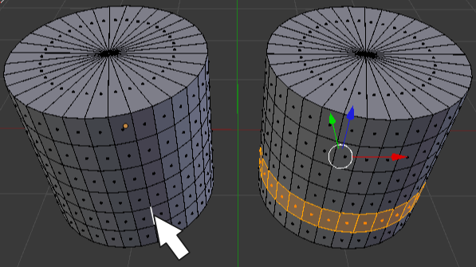

Editar bucles
Vamos con un recorrido de las ediciones más frecuentes cuando trabajamos con bucles.
- Seleccionar bucle de bordes. Para seleccionar un bucle es necesario que estemos en modo de selección por vértices
 o por lados
o por lados  . Después nos situamos con el puntero del ratón sobre uno de los lados que conforman el bucle que queremos seleccionar y hacemos clic derecho con la tecla "Alt" pulsada. En realidad esto ya lo vimos al explicar los fundamentos de Modo Edición
. Después nos situamos con el puntero del ratón sobre uno de los lados que conforman el bucle que queremos seleccionar y hacemos clic derecho con la tecla "Alt" pulsada. En realidad esto ya lo vimos al explicar los fundamentos de Modo Edición  pero siempre viene bien un repaso.
pero siempre viene bien un repaso.
- Seleccionar bucle de facetas. Exactamente igual pero debemos estar en modo de selección de caras
 y hacer clic en un lado de los que cruza el bucle que se quiere seleccionar.
y hacer clic en un lado de los que cruza el bucle que se quiere seleccionar.

- Eliminar. Suponiendo que el bucle de bordes está seleccionado (no funciona con bucles de facetas), al pulsar la tecla "Supr" se nos despliega un menú del que seleccionamos, como es lógico, Bucle de bordes.
- Desplazar por el bucle de caras al que pertenece. Muchas veces los bucles se pueden desplazar sin problemas usando el Manipulador 3D pero en otras ocasiones no es así. Para garantizar un correcto deslizamiento nos dirigimos al cuadro de Herramientas ("T") y usamos la opción Deslizar borde y movemos el ratón. Como es lógico damos por hecho que el bucle está seleccionado.
El caso particular del cilindro

El cilindro es una primitiva que presenta un problema: las tapas están formadas por triángulos y eso no es bueno porque no es posible añadir bucles. Es una fuente de problemas. La solución:
- Eliminamos el vértice ("Supr"/Vértices) de una tapa.
- Hacemos una extrusión nula ("E+Intro") y después escalamos ("S").
- Hacemos una nueva extrusión nula ("E+Intro") y usamos el menú Malla/Vértice/Mezclar. En el menú emergente escogemos Al centro. Lo que hace Blender es convertir todos esos vértices en uno solo y como consecuencia se generan triángulos (digamos que es un mal necesario).

Sin embargo ahora controlamos el tamaño de los triángulos seleccionando el bucle cercano y escalándolo, podemos añadir bucles nuevos...